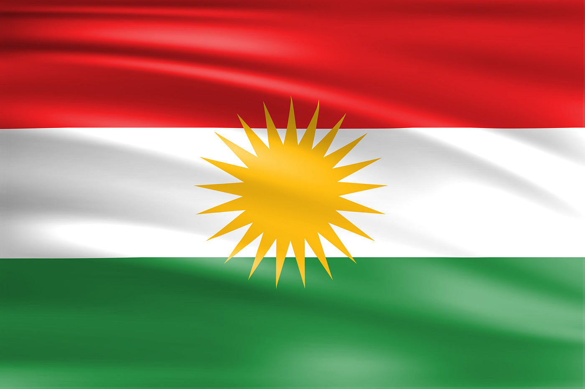

{kind=link}
Historischer Hintergrund
historische Hintergrund des Konfliktes geht zurück bis auf den Zusammenbruch des Osmanischen Reiches, indem die kurdischen Gebiete sich der modernen Türkei anschliessen mussten, was zur brutalen Unterdrückung des kurdischen Volkes
führte, weil man in der Türkei als Türken das einzig vorhandene Volk sein wollte. Das türkische Volk versuchte mit extremen Wegen das kurdische Volk auszurotten/zu unterdrücken. Dies führte zu einer Gegenwehr der Kurden, was zu einem gewaltigen Krieg führte, der bis heute noch andauert.Hauptursache für den Krieg
Die kurdische Sprache wurde verboten, kurdische Namen wurden turkfiziert, Kurden wurden politisch unterdrückt, die kurdische Identität wurde geleugnet, militärische Operationen der Türken gegen die, Menschenrechte verletzten und die Unterdrückung der kurdischen Kultur und Tradition. Natürlich gibt es noch mehrere Wege, wie die Kurden Unterdrückt wurden, doch das sind die Hauptgründe, weshalb es zum Konflikt gekommen ist.
Die wichtigsten Ereignisse von 1980-1994
1978 wurde die kurdische Arbeiterpartei, die PKK gegründet, was in den 80er und 90er Jahren zu militärischen Auseinandersetzungen führte. 1980 kam das türkische Militär an die Regierung, weshalb es im selben Jahr eine Reihe von Militäroperationen gegen die Kurden gab. 1987 wurde in einigen kurdischen Regionen der Ausnahmezustand der Türkei verhängt, was zu einer Verschärfung der Gewalt und politischen Repression führte. Die kurdische Kundgebung 1988 in Diyarbakir, bei der mehrere kurdische Demonstranten von Sicherheitskräften getötet wurden. 1999 die Verhaftung des Gründers der PKK was zu Waffenstillständen der zwei Parteien führte.